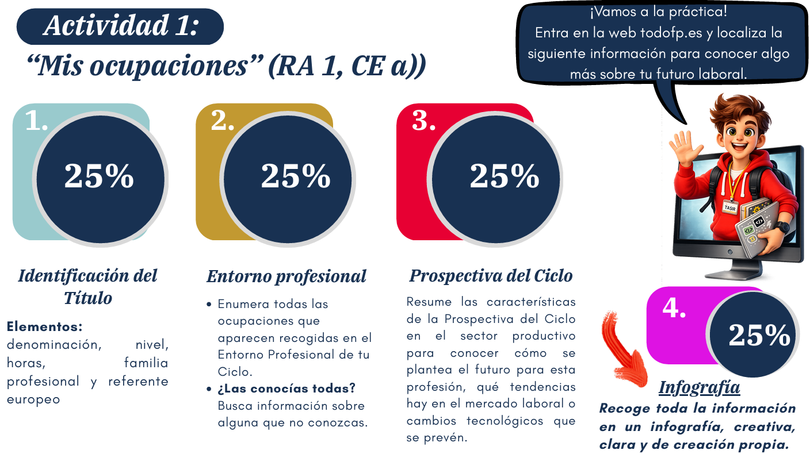
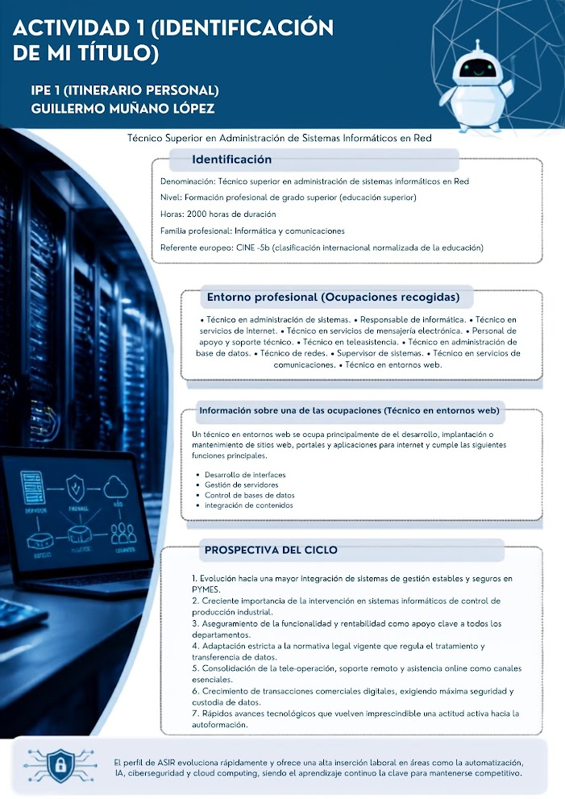

RA 1 · CE a) · IPE Unidad 01
Actividad 1 · Mis ocupaciones
Identificación del título, entorno profesional y prospectiva del ciclo de ASIR.
← Volver a IPE1. Identificación del título
Denominación
Técnico Superior en Administración de Sistemas Informáticos en Red
Nivel
Formación Profesional de Grado Superior (Educación Superior)
Duración
2000 horas totales
Familia profesional
Informática y Comunicaciones
Referente europeo
CINE-5b / EQF-5
2. Entorno profesional
Ocupaciones y puestos de trabajo más relevantes del ciclo:
- Técnico/a en administración de sistemas
- Técnico/a en servicios de Internet
- Personal de apoyo y soporte técnico
- Técnico/a en administración de base de datos
- Supervisor/a de sistemas
- Técnico/a en entornos web
- Responsable de informática
- Técnico/a en servicios de mensajería electrónica
- Técnico/a en teleasistencia
- Técnico/a de redes
- Técnico/a en servicios de comunicaciones
3. Ocupación destacada: Técnico en Entornos Web
Se ocupa principalmente del desarrollo, implantación o mantenimiento de sitios web, portales y aplicaciones para Internet. Sus funciones principales son:
- Desarrollo de interfaces: diseño y estructuración de la parte visual y de usuario.
- Gestión de servidores: configuración y optimización de los entornos de alojamiento.
- Control de bases de datos: organización, almacenamiento y seguridad de la información.
- Integración de contenidos: incorporación y sincronización de recursos multimedia y lógicos.
4. Prospectiva del ciclo y tendencias de futuro
- Mayor integración de sistemas de gestión estables y seguros en PYMEs.
- Creciente importancia en sistemas informáticos de control de producción industrial.
- Funcionalidad y rentabilidad como apoyo clave a todos los departamentos.
- Adaptación a la normativa legal sobre tratamiento y transferencia de datos.
- Consolidación de la tele-operación, soporte remoto y asistencia online.
- Crecimiento de transacciones comerciales digitales con máxima seguridad.
- Avances tecnológicos que exigen una actitud activa hacia la autoformación.
El perfil profesional evoluciona al compás de la infraestructura empresarial. Automatización, inteligencia artificial, ciberseguridad y cloud computing garantizan una alta inserción laboral para quienes se mantengan al día.
Evidencias

